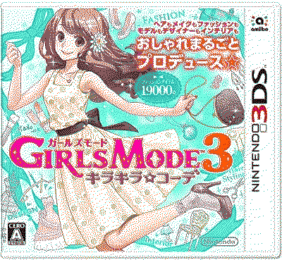

style savvy fashion forward
logs
24.dec.24 after getting a bit tired of styling star, i decided to play this one around the start of december. i have roughly around... 5 hours on this game. and honestly i really like the premise and all of that. the dollhouse feature and having to decorate and rent out rooms seems pretty fun! the game itself looks different from trendsetters of course but at least it's an art style that i like more compared to styling star. i also absolutely LOVE the fact that the in-game time is based on your irl time (i am too lazy to google the correct term for this). i find it so charming. yes i play this game at 2am.
.jpg)
.jpg)
.jpg "you're gonna have to PRY the black cat beanie from my hands")
.jpg "om om om om om om om om om om om om om om om om om om om om om om om om om om om om om om om om om om om om om om")
BUT there is something a bit alarming to this game. i am 5 hours in and i am already finding a lot of requests getting repeated to me over and over again?!?!?!? i have no clue why this is an issue HERE because i feel like in trendsetters at least it's not very noticible. i have yet to come up with this sort of problem in styling star and i do have a couple of hours in that game as well. so what happened here? it's honestly a bit disappointing i cant lie!
but anyways, peace and love, nonetheless. i do love the variety of leg warmers in this game tho. unless it's a skill issue, i feel like trendsetters didn't have that many leg warmer options in rotation.
.bmp)
.JPG)
.JPG)
.JPG)